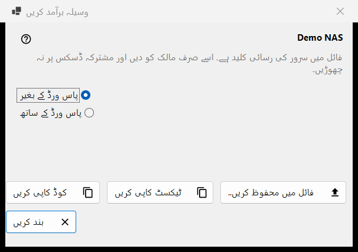
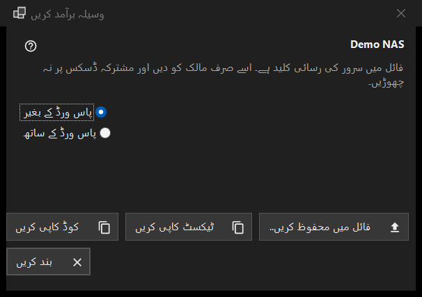

وسیلہ برآمد کریں
یہ کس مقصد کے لیے ہے
ایک SFTP سرور کی سیٹنگز اس طرح تیار کرتا ہے کہ کوئی دوسرا کمپیوٹر یا فون انہیں درآمد کر سکے۔ یہ وسائل کی فہرست کے مزید مینو کی ایکسپورٹ.. کمانڈ سے کھلتی ہے اور اس کے لیے ایک منتخب وسیلہ درکار ہے؛ Share Manager کے مشترک فولڈر کی ایکسپورٹ اس کے بجائے Share Manager سے کی جاتی ہے۔


اس ترتیب میں
- وسیلے کے نام کے نیچے انتباہ پڑھیں۔
- پاس ورڈ کے بغیر (ڈیفالٹ) یا پاس ورڈ کے ساتھ منتخب کریں۔
- فائل میں محفوظ کریں.. بٹن دبائیں، یا سیٹنگز کو ٹیکسٹ یا چھوٹے کوڈ کی صورت میں کاپی کریں۔
- نتیجہ صرف اس کے مالک کو دیں۔
عناصر
انتباہ
نام کے نیچے کی لائن بتاتی ہے کہ فائل میں سرور تک رسائی کی کلید ہے: اسے صرف اس کے مالک کو دیں اور کبھی مشترک ڈسک پر نہ چھوڑیں۔ یہ فائل، کاپی کیے گئے ٹیکسٹ اور کوڈ، تینوں پر لاگو ہوتا ہے۔
پاس ورڈ کے بغیر یا ساتھ
پاس ورڈ کے بغیر شروع میں منتخب ہوتا ہے۔ پاس ورڈ کے ساتھ صرف تب فعال ہوتا ہے جب محفوظ پاس ورڈ واپس پڑھا جا سکے؛ ورنہ یہ اشارہ دکھاتا ہے: پاس ورڈ محفوظ نہیں ہے - فائل اس کے بغیر بنے گی۔ پاس ورڈ ایکسپورٹ کے لیے صرف میموری میں ڈی کرپٹ ہوتا ہے اور کہیں اور نہیں جاتا۔
محفوظ کرنا، ٹیکسٹ کاپی، کوڈ کاپی
فائل میں محفوظ کریں.. محفوظ کرنے کے ڈائیلاگ کے ذریعے ایک .fmscfg فائل لکھتا ہے؛ لکھنے والا FAT یا exFAT ڈسک، نیٹ ورک ڈسک اور وہ فولڈر جنہیں دوسرے صارف بدل سکتے ہیں مسترد کر دیتا ہے، اور کبھی آدھی لکھی فائل نہیں چھوڑتا۔ ٹیکسٹ کاپی کریں سیٹنگز کی دستاویز کلپ بورڈ پر رکھتا ہے اور کوڈ کاپی کریں اسی مواد کا چھوٹا کوڈ۔ دونوں رازداری کے نشان کے ساتھ کاپی ہوتے ہیں (کلپ بورڈ ہسٹری نہیں، کلاؤڈ سنک نہیں)۔ اسٹیٹس لائن نتیجہ دکھاتی ہے۔
کیا ایکسپورٹ ہو سکتا ہے
صرف وہ SFTP سرور جس کی کلید ویوئر پہلے سے یاد رکھتا ہو۔ ونڈو ہر صورت میں کھلتی ہے، اور بٹن دبانے پر اسٹیٹس لائن میں انکار نظر آتا ہے: نیٹ ورک فولڈر (SMB) کو اس فائل سے بیان نہیں کیا جا سکتا؛ سرور کی کلید یاد نہیں رکھی گئی (وسیلے کو ایک بار کھول کر کلید کی تصدیق کریں)؛ وسیلے کا کوئی ایسا پتہ نہیں جو آگے دیا جا سکے؛ فولڈر اس طرح لکھا گیا ہے جسے فائل قبول نہیں کرتی (اسے ترمیم کریں.. سے درست کریں)۔